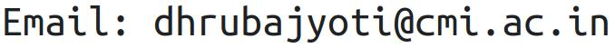

I am doing my first year of Masters studies at ENS Paris-Saclay, Université Paris-Saclay in Computer Science. Previously, I did my undergraduate studies at Chennai Mathematical Institute. A list of my coursework is available here.
I am interested in the theory of distributed computing.
